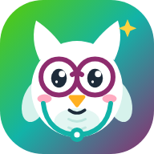

اتصال اینترنت برقرار نیست
Therapo برای باز کردن درسها و ذخیره پیشرفتت به اینترنت نیاز دارد. اتصال را بررسی کن و دوباره امتحان کن.
You are offline — please check your connection.

Therapo برای باز کردن درسها و ذخیره پیشرفتت به اینترنت نیاز دارد. اتصال را بررسی کن و دوباره امتحان کن.
You are offline — please check your connection.